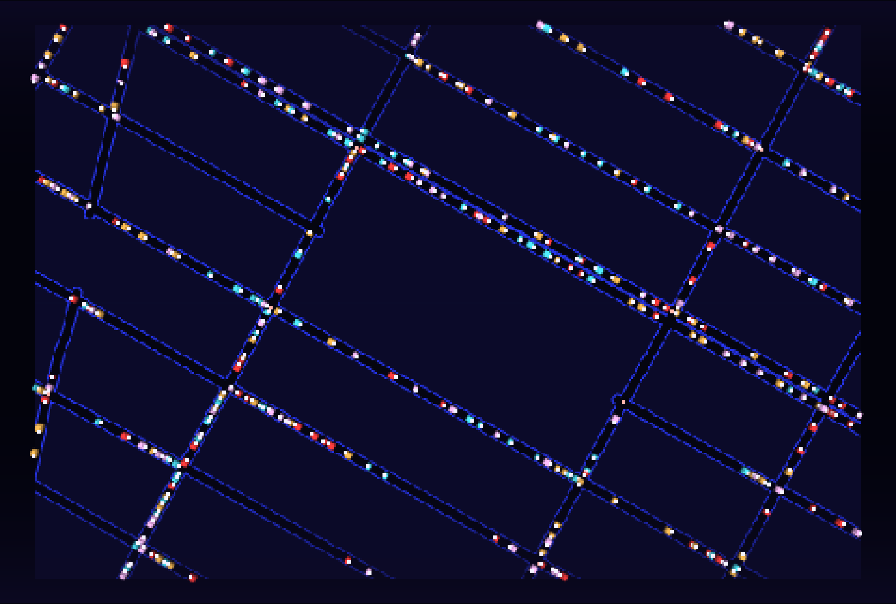
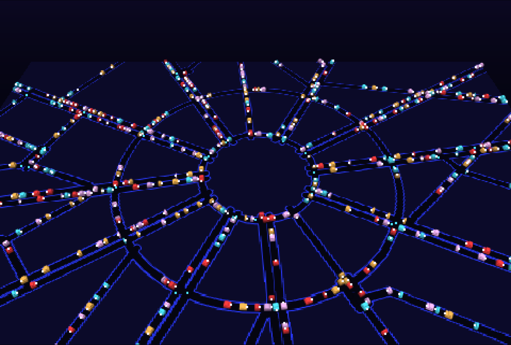

In the Biham–Middleton–Levine (BML) model [1] two species of cars occupy the cells of a $W\times H$ torus. Eastbound cars try to move one cell east on even half-steps, and northbound cars one cell north on odd half-steps. A car moves only if its target cell is empty. Simulations show an abrupt transition from free flow to global jamming as density rises. Rigorous results exist only near the extremes. Angel, Holroyd and Martin proved that the jammed phase occurs at densities close to one [2]. Austin and Benjamini proved self-organisation to free flow below a size-dependent density, for a closely related update rule [3]. Whether a sharp threshold $p_c\in(0,1)$ exists remains open. Intermediate states and their dependence on the torus geometry are well documented numerically [4].
Real streets are not tori. They have arbitrary bearings, one-way and two-way segments, junctions of every degree, turns, signals and open boundaries. This paper asks which parts of the BML mathematics survive the passage to real street geometry, and which parts require running dynamics at all. That passage has two separate steps, which §2 keeps apart: a mathematical extension of the model, and a bridge from the extended model to real traffic. Our answer for the first step is that much of the mathematics is structural. Gridlock is a statement about cycles of a wait-for relation, and such cycles are constrained by the topology of the network, not by the details of the update rule. Concretely, we contribute the following.
Each claim in this paper is placed in one of three layers, or labelled with both layers where it connects two (Table 0). A result at one layer does not carry over to another unless we say how.
L0, BML. This is the automaton of [1] and its train variant [3]. Cells form the torus $\mathbb Z_W\times\mathbb Z_H$. There are two species with fixed directions (east and north), synchronous alternating half-steps, no routing, no signals and no boundary. Randomness enters only through the initial configuration, typically i.i.d. with density $p$. The known theorems live here: the jammed phase at high density [2], self-organisation at low density for the train rule [3], and the repository's exact finite-torus results. Among the latter, a jam with $n$ cars exists iff $\min(W,H)\le n\le WH$. The open problem, a sharp threshold $p_c$, also lives here. We prove nothing new at L0.
L1, the extension. This is the two-phase exclusion dynamics on lane graphs (§4). Every car carries a committed next cell, junctions may be governed by signals and a box rule, routing is random under turn constraints, and the boundary is closed by re-entry. L1 contains L0 as a special case (Proposition 1), and that is the only formal link between them. Theorems 2–6 are proved at L1, under the two assumptions (E) and (C) of §5, so they hold for every model satisfying those, including L0. The converse fails: L0 theorems do not transfer to L1 by themselves. The jammed-phase proof of [2] and the low-density argument of [3] use the translation invariance and diagonal structure of the torus, which a lane graph lacks. L1 also has merges, where two cars contend for a cell, and L0 has none. The exact interval $[\min(W,H),WH]$ becomes, at L1, a one-sided girth bound with a converse limited by basins (Theorem 3).
L2, the bridge to real traffic. The street geometry is real: OpenStreetMap ways, their one-way tags and the side of the road a country drives on. Everything else is a modelling choice, and none of it was calibrated against observed traffic:
Human drivers also re-route when blocked, which violates (C). The experiments of §6 are therefore simulations of L1 on L2 geometry. Their findings are predictions and hypotheses about real networks; none of them is a measurement of one.
| Claim | Layer | Status |
|---|---|---|
| Jammed phase near density one; low-density self-organisation (train rule) | L0 | cited [2, 3] |
| Gridlock = fixed point; exact finite-torus jam interval $[\min(W,H),WH]$ | L0 | cited (repository: the first in Lean, the second in prose with finite checks) |
| Existence of a sharp threshold $p_c$ | L0 | open |
| Proposition 1: L1 reduces to L0 on the torus | L1 → L0 | proved; tested on 80 orbits |
| Theorem 2: wait-for cycles and their basins are frozen | L1 | proved; Lean for an abstract contract; tested |
| Theorem 3, Corollary 4: girth bound, converse (TRAIN: cycles using both axes), parity (no wraparound) | L1 | proved; tested |
| Theorem 5: admission lemma, max-flow throughput bound | L1 | proved; tested |
| Theorem 6: Sturmian free speed | L1 (bearing from L2) | proved; tested |
| Risk index $R$ and its zeta bound | L1 | bound proved; use as a ranking heuristic |
| Lane-graph construction and artefact rules | L2 | modelling choices |
| F1–F5 for six named cities | L1 on L2 geometry | simulated |
| Theorems 7–11 (real traffic, physical assumptions) | L2 | proved; lattice instances tested; not tested on observed traffic |
| Re-routing experiment (Table 3) | L1 on L2 geometry | simulated |
| SUMO test of Theorems 7, 8, 11 (Table 4) | L2 in a microscopic simulator | simulated: 11 holds; 7 holds only with kept-clear boxes subtracted; 8 not borne out by SUMO's rerouting device |
| Relevance to real cities, fleets and rail | L2 | hypothesis; holds only where (E) and (C) do |
Beyond [1–4], the stochastic cellular automaton of Nagel and Schreckenberg [5] introduced random deceleration (“dawdling”), which we adopt as an optional noise. Exclusion processes with open boundaries, analysed exactly by Derrida, Evans, Hakim and Pasquier [6], explain the boundary-limited flow plateau we observe. On the macroscopic side, the cell transmission model [7] discretises the LWR kinematic-wave theory on networks. The macroscopic fundamental diagram was established empirically by Geroliminis and Daganzo [9]; Daganzo and Geroliminis [8] approximated it analytically from network geometry and signal timing alone. Our throughput bound is the microscopic, capacity-only counterpart of that idea. Deadlock as a cycle in a wait-for graph is classical in operating systems [10]. Our Theorem 2 is that condition specialised to committed vehicles. Digital straight lines and their cutting sequences are Sturmian words [11, 16], and the grid traversal we use to rasterise is that of Amanatides and Woo [15]. Weighted cycle counts on directed graphs are encoded by the Bowen–Lanford zeta function [12]. Maximum flows are computed by Edmonds–Karp [13], and the feedback-arc-set problem relevant to network design is NP-hard [14]. Street geometry comes from OpenStreetMap [17].
A window of $720\times480$ m around a centre is projected equirectangularly and cut into $96\times64$ cells of side $s=7.5$ m, one car length. Drivable ways (motorway to living street, excluding tunnels and access-restricted ways) are taken with their one-way tags. A one-way street becomes one lane. A two-way street becomes two lanes, one on each side of the centre line, on the side the country drives on. Each lane polyline is traversed cell by cell with the Amanatides–Woo algorithm [15]. That yields a 4-connected cell path, and every consecutive pair becomes an arc. Every arc is therefore a unit step, horizontal or vertical, and carries the true bearing of its street.
Three rules remove artefacts that would otherwise create spurious deadlocks.
Dead ends receive a turn-around arc. Cells where lanes leave the window are exits and those where they enter are entries.
A state assigns to each car $k$ a cell $p_k$ (at most one car per cell) and a committed next cell $q_k\in\operatorname{out}(p_k)\cup\{\mathrm{EXIT}\}$. The axis of the move $p_k\to q_k$ is car $k$'s species for its current hop. Half-steps alternate phases $0,1,0,\dots$ and in phase $\varphi$ only cars whose committed move has axis $\varphi$ may move. Under CLASSIC a car moves iff its target was empty before the half-step [1]. Under TRAIN it moves iff its target is empty or its occupant also moves, so that closed loops of same-phase cars rotate (the rule considered in [3]). Several cars may contend for one cell at a merge; the longest-waiting car wins, with ties going to the lower identifier. A car chooses its next hop only after moving. Choices respect turn limits: no U-turns, no turns sharper than $120^\circ$, no two-hop reversal beyond $150^\circ$, and optionally no turns across oncoming traffic. Straight continuation is preferred $4{:}1$. Cars leaving at an exit re-enter at a free entry, which conserves the population.
Three traffic laws act only by removing moves.
We study four regimes, from strict to permissive: city code ($G=6$, box rule, no cross-traffic turns); free turns (cross-traffic turns allowed); block the box (no box rule); and BML lights ($G=1$).
Throughout, we assume only:
(E) Exclusion. A cell holds at most one car, and a car advances at most one cell per half-step.
(C) Commitment. A car changes $q_k$ only when it moves. Under CLASSIC a move into $q_k$ requires $q_k$ to be empty before the half-step. Under TRAIN it requires $q_k$ to be empty or vacated in the same half-step by a car that moves in the same phase.
Signals, the box rule, dawdling and breakdowns only remove moves and so preserve every statement below of the form “never moves” or “at most”.
For a car $k$ on the street let $\beta(k)$ be the occupant of $q_k$, if any. This is a direct blocking edge. Under the box rule, if $q_k$ is empty but $k$ waits to enter a junction, let $\beta(k)$ be the first occupant along $k$'s committed box path. This is an indirect edge. The map $\beta$ is a partial function on cars, so its functional graph consists of trees feeding cycles.
formal/lean/BML/LaneDeadlock.lean) for an abstract half-step contract with tagged occupants, committed next cells, box tails and movement events. The theorems are Cycle.classic_immobile, Cycle.train_immobile and the capture theorems Cycle.classic_capture and Cycle.train_capture. A refinement proof from the JavaScript simulator to that contract remains open. The correspondence is supported instead by targeted tests, which check that certified cars never move again across both rules, all laws, dawdling and breakdowns.The natural candidate for “where jams live” is a single car's turn graph, whose states are lane arcs and whose arcs are legal turns. It is the wrong object. A jam loop is formed by different cars, each arriving from its own direction. In the $2\times2$ box of a two-way crossing, four cars that each drive straight through, from four directions, close a 4-cycle. No single car could drive that cycle, and on the London preset the turn graph has girth 20 while the observed cores have 4 cars.
Definition. The jam graph $J$ on road cells has an arc $b\to c$ iff some car at $b$ can commit to $c$: either for some legal arrival $a\to b$, or freshly spawned at $b$ (a spawned car has no arrival and may take any out-lane).
On the torus, $J$ is the east–north graph, whose girth is $\min(W,H)$. Specialised to L0, Theorem 3(a) then recovers the lower half of the BML existence threshold “a jam with $n$ cars exists iff $\min(W,H)\le n\le WH$”. Under the box rule, $\beta$-cycles can contain indirect edges. Such cycles are certified by Theorem 2 but need not be cycles of $J$, and §6 shows that they occur.
Capture for fixed routes. If routes are fixed in advance, as for automated vehicles or block-signalled trains, let $d_k$ be the number of hops car $k$ makes before it reaches a frozen car. While any non-frozen car can move, one does, so all cars are frozen within $\sum_k d_k$ rounds. On the torus with straight routes this has the shape of the Lean-proved capture bound $n_E(W-1)+n_N(H-1)$.
Two-phase alternation therefore favours diagonal streets, by up to $\sqrt2$ at $45^\circ$. The rasteriser's staircases inherit the dynamics of the blocking staircases studied on the torus. The tests confirm the switch rate and speed to within $2\cdot10^{-3}$ at ten bearings, and a simulated lone car at slope $\tfrac12$ attains $1.5$.
Let $q(b\to c)$ be the mean-field routing probability on $J$: the probability that a car at $b$ commits to $c$, averaged over its arrivals. Treat occupancy as independent with density $\rho$. A simple cycle $C$ of $J$ is then closed instantaneously with probability $w(C)=\prod_{b\to c\in C}\rho\,q(b\to c)$. Let $M=\rho Q$, with $Q$ the matrix of $q$. Each simple cycle of length $\ell$ contributes $\ell$ rotations, each of weight $w(C)$, to $\operatorname{tr}M^\ell$, and all other terms are non-negative. Hence $$ R(\rho):=\sum_{C\ \text{simple}} w(C)\;\le\;\sum_{\ell\ge1}\frac{\operatorname{tr}M^\ell}{\ell}\;=\;-\log\det(I-\rho Q)\;=\;\log\zeta_J(\rho), $$ where $\zeta_J$ is the weighted Bowen–Lanford zeta function [12]. The equality requires $\rho\,\lambda_{\max}(Q)<1$, which holds because exits make $Q$ substochastic. As $\rho\to0$, $R(\rho)\approx N_g(\rho\bar q)^g$, where $N_g$ counts cycles of length $g=\operatorname{girth}(J)$, so the girth sets the exponent. Queues correlate occupancy positively, so $R$ is used here only to rank networks. We compute it by enumerating simple cycles up to $g+8$ within a work budget.
Scope. Everything in this section is a simulation of the L1 model on L2 street geometry. City names identify street layouts only. No traffic counts, speeds or signal plans from these cities were used, and nothing here is evidence about traffic as it actually occurs there.
Setup. Six presets were extracted from OpenStreetMap on 18 November 2026: Midtown (New York), Eixample (Barcelona), Grachtengordel (Amsterdam), Étoile (Paris), Bank (London) and Shibuya (Tokyo). London and Tokyo drive on the left. For each preset we ran the four law regimes at target densities $\rho\in\{0.1,\dots,0.5\}$ with five seeds each, $600$ runs in all. Each run lasts $1200$ half-steps with $p=0.1$ under CLASSIC. Flow $J=\rho\,v$ is averaged over the last $600$ half-steps, where $\rho$ is the on-street density and $v$ is hops per car per full step. The frozen share is the fraction of on-street cars certified by Theorem 2 at the end. Table 1 lists the structural quantities and Table 2 the frozen shares. Figures 2–3 show all runs. The script app/scripts/experiments.mjs regenerates docs/paper/data/experiments.json deterministically.
| cells | junctions | girth $G$ | $g(J)$ code | $g(J)$ BML | $R$ code | $R$ BML | $F^\ast$ | |
|---|---|---|---|---|---|---|---|---|
| Midtown | 1107 | 17 | 58 | 140 | 58 | $5\cdot10^{-75}$ | $1\cdot10^{-32}$ | 13 / 26 |
| Eixample | 1355 | 34 | 52 | 106 | 52 | $2\cdot10^{-57}$ | $8\cdot10^{-30}$ | 16 / 32 |
| Grachtengordel | 876 | 38 | ∞ | ∞ | ∞ | 0 | 0 | 12 / 24 |
| Étoile | 1626 | 59 | 18 | 62 | 18 | $5\cdot10^{-34}$ | $1\cdot10^{-11}$ | 20 / 40 |
| Bank | 1727 | 103 | 4 | 4 | 4 | $7\cdot10^{-4}$ | $2\cdot10^{-3}$ | 26 / 42 |
| Shibuya | 1752 | 126 | 4 | 4 | 4 | $5\cdot10^{-4}$ | $1\cdot10^{-3}$ | 25 / 48 |
| city code | free turns | block the box | BML lights | free turns, $\rho=0.1$ | |
|---|---|---|---|---|---|
| Étoile | 0.00 ± 0.00 | 1.00 ± 0.00 | 1.00 ± 0.00 | 1.00 ± 0.00 | 0.99 ± 0.01 |
| Bank | 0.00 ± 0.00 | 0.42 ± 0.12 | 0.90 ± 0.02 | 0.91 ± 0.05 | 0.04 ± 0.07 |
| Shibuya | 0.74 ± 0.28 | 0.81 ± 0.18 | 0.89 ± 0.05 | 0.94 ± 0.05 | 0.37 ± 0.46 |




F1. Large jam girth means no freezing. (simulated) On the three grids, every one of the $300$ runs ended with nothing frozen, under every law and up to $\rho=0.5$. Their jam graphs have girth $\ge52$, or are acyclic (Grachtengordel). By Theorem 3, a core there needs a block-sized loop of consistently committed cars, which random routing practically never assembles.
F2. $2\times2$ boxes are the nucleation sites. (simulated) Bank and Shibuya have $g(J)=4$ under every regime. Bank stays essentially clear under the city code (frozen share at most $0.03$ on average), where signals and the box rule keep the boxes empty in time, a temporal effect that $J$ cannot see. It freezes as laws are repealed. Shibuya froze even under the city code ($0.74\pm0.28$ at $\rho=0.3$). Its large seed-to-seed variance shows bistability: whether a core nucleates is a stochastic event, consistent with the repository's separation of formation from capture.
F3. A safety rule can create deadlock. (simulated) At $\rho=0.1$ on Étoile, free turns (box rule on) froze completely ($0.99$). Repealing the box rule as well (block the box) left it free-flowing ($0.00$). All five cores observed under free turns contain an indirect edge. They are 87–88-car loops around the roundabout, in which cars committed to box paths wait on one another. These deadlocks lie outside $J$ (Theorem 3 covers direct cores only). They are nonetheless certified by Theorem 2. In the model, rules that enlarge a vehicle's commitment enlarge the wait-for relation, and can close cycles that the street graph alone does not contain. Whether real “don't block the box” enforcement has this effect is an L2 question that these runs cannot answer, since real drivers do not commit to box paths the way modelled cars do.
F4. Speed above one on diagonal grids. (simulated) Under BML lights at $\rho=0.1$ the mean speed was $1.20$ on Midtown, whose grid is rotated about $29^\circ$, and $1.31$ on Eixample, rotated about $45^\circ$. Both exceed the axis-aligned bound of one, as Theorem 6 predicts, and stay below the lone-car values $1+\tan29^\circ\approx1.55$ and $2$ because of dawdling, turns and interaction.
F5. The risk index ranks well but not perfectly. (simulated) Across the $24$ (preset, regime) pairs, the Spearman correlation between $R(0.3)$ and the frozen share at $\rho=0.3$ is $0.72$. All $13$ pairs with $R<10^{-20}$ had zero freezing, and every pair with mean frozen share above $5\%$ has $R\ge1.4\cdot10^{-11}$. The exceptions are temporal (F2: Bank under the city code) and indirect (F3), both beyond what $J$ encodes.
Throughput. In tests on all six presets under both rules, the measured exit rate never exceeded $F^\ast$. The admission lemma held at every non-spawn cell over $400$ half-steps on three presets.
Sections 4–6 work on the lattice: $7.5$ m cells, unit speed, and drivers who never revise a committed move. Real traffic has continuous space, signal plans, and drivers who re-route when blocked. This section states five results whose assumptions are physical and measurable, and proves them. Theorems 3 and 5 are lattice instances of two of them. For each we name the data that would test it. Section 7.7 tests three of them in the microscopic simulator SUMO. None has been tested against observed traffic yet.
(X) Exclusion. A vehicle cannot advance while its front-to-front headway to its leader is at most the jam spacing $s_{\mathrm{jam}}\approx6.5$–$7.5$ m, that is $k_{\mathrm{jam}}=1/s_{\mathrm{jam}}\approx130$–$150$ veh/km/lane. It enters space only once that space is free; this is the physical form of CLASSIC.
(O) Options. At each moment a vehicle has a finite set of legal next moves from its position, each needing certain space to be free. It may switch among them at will, unless it is physically committed, as inside a junction box, where the move also needs the rest of the box path.
(S) Signals. Stop line $e$ has saturation flow $s_e\approx1800$–$1900$ veh/h/lane [18], green fraction $\lambda_e$ and green duration $g_e$.
(V) Speed limit. No vehicle exceeds $v_f$.
A closed loop of lane $C$, of length $L(C)$, is in gridlock when its vehicles are committed each to the path ahead of the next, and each is held by the next vehicle: its headway to that vehicle is at most $s_{\mathrm{jam}}$. A vehicle stopped for another reason, such as a breakdown, is not held.
A $2\times2$ crossing box with sides of $15$ m needs at least $8$ vehicles; a loop round a Manhattan block ($80\times274$ m) needs at least $95$. Theorem 3(a) is the case where $s_{\mathrm{jam}}$ equals the cell length.
Kept-clear junctions. The same proof gives a general form. If vehicle $i$ is held at a headway of at most $s_{\mathrm{jam}}+e_i$, then $n\ge(L(C)-\sum_i e_i)/s_{\mathrm{jam}}$. Where law or the simulator keeps junction boxes clear, a vehicle waiting at a stop line is held across the box, so $e_i\ge b_i$, the box length. The bound then becomes $n\gtrsim(L(C)-B)/s_{\mathrm{jam}}$, with $B$ the total box length on the loop (Section 7.7).
Under (O), a trap is a set $S$ of vehicles such that every option of every vehicle in $S$ needs space held by a vehicle of $S$. An exit is never held.
This is the OR-request model of deadlock, whose criterion is a knot in the wait-for graph [19]; Theorem 2 is its single-request case. We tested Theorem 8 in the simulator with a re-routing option, under which a blocked driver switches to any free legal move from its lane, committing to the whole box path when it enters a junction. The test runs covered six presets, four regimes, $\rho\in\{0.2,0.3,0.4\}$ and five seeds, 360 runs in all (Table 3). Without the box rule every cell of every map is safe, and no trapped car remained in any of the 180 runs. With the box rule, traps remained only through box commitment. The reading for real traffic is that permanent gridlock requires a commitment drivers cannot revise, such as being inside a box whose exits are full. Theorem 8 excludes only permanent gridlock; long transient jams remain possible.
| committed | re-routing | |
|---|---|---|
| No box rule (block the box, BML lights): safe-cell share | — | 100% on all six maps |
| No box rule: trapped share, all 180 runs | up to 1.00 (Étoile) | 0 in every run |
| Free turns, $\rho=0.4$: trapped share, Étoile / Bank / Shibuya | 1.00 / 0.38 / 0.70 | 0.19 / 0.12 / 0.12 |
| Flow $J$ at $\rho=0.3$: Étoile, BML lights | 0.000 | 0.207 |
| Flow $J$ at $\rho=0.3$: Bank, block the box | 0.026 | 0.149 |
The long-run rate $\sum_e\lambda_e s_e$ alone is not a valid bound, because a window opening at the start of green discharges at full saturation flow. Example: a Manhattan block loop holding $29$ vehicles, with two entries of $1800$ veh/h green for $45$ s of a $90$ s cycle, cannot lock in less than about $65$ s. This window for clearing an incident could be checked against queue growth recorded by loop detectors [22].
Theorem 5 is the lattice instance. $F^\ast$ is computable from signal plans and saturation flows [18].
Trapped vehicles break stability: they add to $\bar N$ but never complete a trip. Theorem 11(b) is a triangular upper envelope for the macroscopic fundamental diagram [9]. It needs only $v_f$, the mean trip length and the cut capacity, all obtainable from GPS traces or loop detectors [21, 22]. In the simulator the finite-window inequality (a) holds with no tolerance on three presets.
We tested Theorems 7, 8 and 11 in SUMO 1.28 [23], with Krauß car following, real lane geometry, keep-clear junctions and guessed signal plans. The networks are the six preset windows, converted from OpenStreetMap by netconvert. Demand is one hour of random fringe-to-fringe trips at $900$, $1800$ or $3600$ veh/h, with three seeds each. Each scenario ran once with fixed routes and once with SUMO's rerouting device (every $30$ s), giving $108$ runs. Teleporting was off, so gridlock persists. At $t=4500$ s we built a wait-for graph from TraCI, with an edge to a stopped leader (bumper to bumper, or across the junction from the stop line) or to a junction foe with priority. Its cycles are gridlock cores. Table 4 summarises the results.
| claim | result |
|---|---|
| Thm 11(a): $\lambda_T\bar\ell_T\le\bar v_T\bar N_T$ on $[600,3600)$ s | $0$ violations in $108$ runs; max ratio $0.966$ |
| Thm 11(c): equality needs stability | mean ratio $0.937$ in the $60$ runs with no stuck vehicle, $0.363$ in the $48$ with stuck vehicles |
| Thm 7, plain: $n\ge L/s_{\mathrm{jam}}$, $s_{\mathrm{jam}}=7.5$ m | fails on $21/21$ gridlock loops ($354$–$749$ m, $38$–$95$ vehicles): density $0.106$–$0.127$ veh/m $=80$–$95\%$ of $k_{\mathrm{jam}}$ |
| Thm 7, kept clear: $n\ge(L-B)/s_{\mathrm{jam}}$ | holds on $12/21$; deficit at most $2.4$ vehicles ($\le6\%$); mean off-box density $0.138$ veh/m against $k_{\mathrm{jam}}=0.133$ |
| Thm 8: re-routing removes permanent gridlock | not borne out by SUMO's rerouting device: stuck vehicles $19\,621\to19\,251$; fewer in $12$ of $54$ pairs, more in $12$, equal in $30$ |
Theorem 11 behaves as stated: the inequality never fails, and it is tight only when no vehicle is stuck. Theorem 7 fails in its plain form, and the failure is in a hypothesis, not in the proof. SUMO keeps junction boxes clear, so a queue waiting at a stop line is held across the box at a headway well above $s_{\mathrm{jam}}$. Junction boxes make up $16\%$ of loop length on average. Subtracting them gives queues at jam density on average. The residual deficits come from vehicles that also wait for a full slot beyond the box, and from our box measurement, which follows only the first internal lane chain. A real gridlock is therefore lighter than $k_{\mathrm{jam}}L$ by roughly the kept-clear share of the loop. Theorem 8 is not confirmed. Its hypothesis (O) lets a blocked driver switch at once to any free legal move. SUMO's device instead recomputes routes every $30$ s from travel times and leaves lane choice to lane-change models. Of the vehicles stuck for $10$ minutes, $96\%$ were behind a stopped leader (spillback) and $2.5\%$ needed a lane change they could not make. Both are commitments outside the driver's revision in that model. The theorem remains a statement about instantly revising drivers. Whether real drivers come closer to (O) or to SUMO's device is an empirical question. Theorems 9 and 10 were not tested here.
What the structure decides (L1). Theorems 2–6 need no update rule beyond (E) and (C), and the four laws only remove moves. They therefore hold for every model satisfying (E) and (C), BML included.
Where the bridge is strong, and where it is weak (L2). The bridge is strongest for systems that satisfy (E) and (C) by design: block-signalled rail, automated guided vehicles, and fleets that report positions and committed next links. For those, Theorem 2 is an exact online deadlock detector. It is weakest for human traffic. Drivers re-route when blocked, which violates (C), so a cycle there is a warning, not a proof. Speeds are continuous, roads have several lanes, and demand follows origin–destination patterns, none of which L1 represents. Section 7 narrows this gap. Its theorems replace commitment by re-routing and the lattice by physical quantities, and Theorem 8 shows why commitment matters: without it, permanent gridlock needs a commitment drivers cannot revise. Testing the L2 hypotheses would still require observed data, such as signal-plan and loop-detector records or vehicle trajectories, compared against the model's predictions, for example jam incidence against girth or risk. We have not done this.
What it does not decide (L0 and L1). Whether a jam forms, how often it nucleates, and whether a sharp density threshold exists are statements about a measure on orbits. Our results bound them (Theorems 3 and 5) or rank networks for them ($R$). They do not settle them, and the threshold question is open even on the torus.
Limitations. No result here is validated against observed traffic. The rasterisation and artefact rules are modelling choices. Routing is random, with turn preferences but no origin–destination demand. The boundary is closed by re-entry. Each run lasts $1200$ half-steps. $R$ assumes independence. Theorems 3–11 have paper proofs, and the lattice cases have property tests, but none of them has a machine-checked proof, and the simulator-to-Lean refinement for Theorem 2 is open.
Design. Choosing the fewest turn bans that raise $\operatorname{girth}(J)$ to a target is a restricted feedback-arc-set problem, NP-hard in general [14] but small enough at city scale for integer programming over the enumerated short cycles. F3 shows that such designs must also account for the indirect cycles created by commitment-enlarging rules.
Much of the BML theory (L0) is about the topology of waiting rather than about the update rule. Extended to lane graphs on real street geometry (L1), this yields an exact deadlock certificate and a two-sided girth law for minimum jam size. It also gives a max-flow throughput bound, a closed-form Sturmian free speed and a zeta-bounded risk index, all computable from OpenStreetMap without simulation. Simulations on the geometry of six cities agree with the predicted dichotomy between large-girth grids, which never froze, and box-ridden centres, which froze readily. They also expose a mechanism outside the street graph: in the model, rules that enlarge commitment can manufacture deadlock. Five theorems under physical assumptions carry part of this to real traffic (L2). Gridlock needs a loop's worth of jammed vehicles. Re-routing removes permanent gridlock unless some commitment cannot be revised. A loop cannot lock faster than its signals let it fill. Throughput is bounded by the cheapest cut through the stop lines, and Little's law bounds the macroscopic fundamental diagram. Testing them against observed traffic is the next step.
Code and data availability. Everything is in the repository larsbx/traffic-theory-research:
the simulator and API (app/), the structural analyses (app/src/structure.js, served by GET /api/analyze), the Lean proof of Theorem 2 (formal/lean/BML/LaneDeadlock.lean), the research notes (docs/research/2026-11-23-dynamics-free-map-mathematics.md, docs/research/2026-11-24-real-traffic-theorems.md), the re-routing analyses (app/src/realflow.js, app/scripts/reroute.mjs), the SUMO test harness (sumo/), and this paper with its data and figure scripts (docs/paper/). Map data © OpenStreetMap contributors, ODbL 1.0.